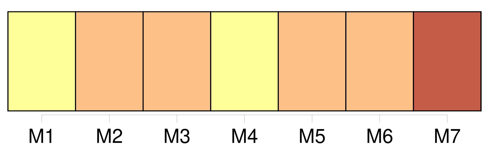
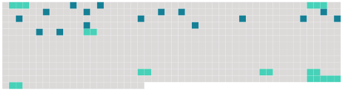

Longueur nb maillons : 24 mentions |
 |
Si [le tuteur nommé] est présent à la délibération qui [lui] défère la tutelle [il] devra sur-le-champ et sous peine d'être déclaré non recevable dans toute réclamation ultérieure proposer ses excuses, sur lesquelles le conseil de famille délibérera. [1 phrases]
Si [le tuteur nommé] n'a pas assisté à la délibération qui [lui] a déféré la tutelle, [il] pourra faire convoquer le conseil de famille pour délibérer sur [ses] excuses.
[Ses] diligences à ce sujet devront avoir lieu dans le délai de trois jours, à partir de la notification qui [lui] aura été faite de [sa] nomination ; lequel délai sera augmenté d'un jour par trois myriamètres de distance du lieu de [son] domicile à celui de l'ouverture de la tutelle : passé ce délai, [il] sera non recevable. [1 phrases]
Si [ses] excuses sont rejetées, [il] pourra se pourvoir devant les tribunaux pour les faire admettre ; mais [il] sera, pendant le litige, tenu d'administrer provisoirement. [1 phrases]
S' [il] parvient à se faire exempter de la tutelle, ceux qui auront rejeté l'excuse, pourront être condamnés aux frais de l'instance.
S' [il] succombe, [il] y sera condamné [lui -même] [21 phrases]
Toute délibération du conseil de famille qui prononcera l'exclusion ou la destitution [du tuteur] , sera motivée, et ne pourra être, prise qu'après avoir entendu ou appelé [le tuteur] [1 phrases]
Si [le tuteur] adhère à la délibération, il en sera fait mention, et le nouveau tuteur entrera aussitôt en fonctions. [1 phrases]
[Le tuteur exclu ou destitué] peut [lui -même] , en ce cas, assigner le subrogé tuteur pour se faire déclarer maintenu en la tutelle. |
 |
Il est possible de télécharger la ressource sur la page Ortolang |
Si vous avez des questions ou vous voyez des erreurs, merci d'envoyer un mail à silvia.federzoni89@gmail.com |